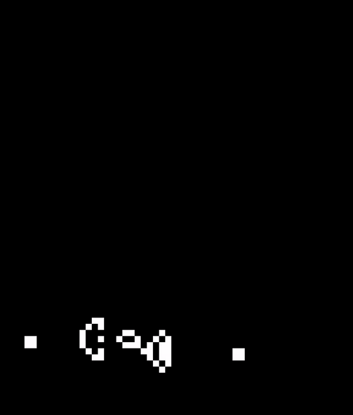
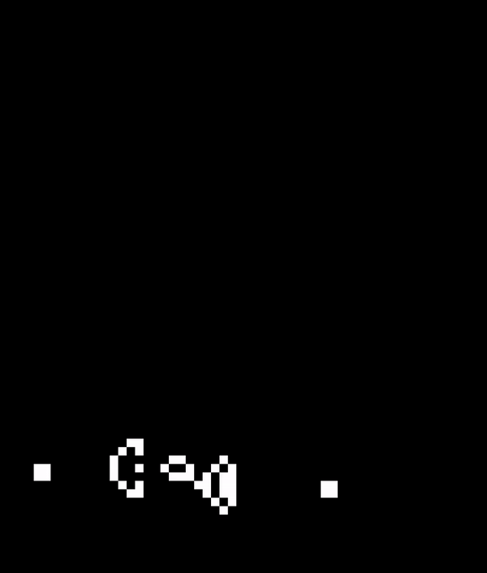

Sandwich
Sandwich est un projet académique réaliser en langage C en binôme.
L'objectif était de simuler le comportement d'automates cellulaires.
Il nous a donc fallu créer des cellules, des règles régissant leur évolution
et aussi mettre en place un système de gestion de ces cellules dans ce monde.
Un exemple concret d'évolution de cellule dans un monde est celui du jeu de la vie de
John Conway. Ce projet m'a permis non seulement de gagner en aisance dans l'utilisation
langage C, mais aussi de découvrir et d'utiliser des outils de programmation tel que GIT ou encore le Makefile;
des techniques de programmation tel que la compilation séparée.
Il a aussi un prétexte d'introduction à SDL qui m'a permis d'utiliser une interface graphique.
Code source du projet sur Github
Compression de données par Huffman
Dans le cadre du cours de théorie de l'information, j'ai eu à écrire l'algorithme
de codage par Huffman. J'ai pu ainsi me rendre compte des perfomances de cette méthode en réalisant un série de tests
sur plusieurs fichiers (texte, image) et en comparant les résultats obtenues à ceux de d'autres modes de compression
des données. J'ai pu également me rendre compte des limites de cette méthode, des conditions rendant son utilisation
optimale. Ce projet a été pour moi de pratiquer le langage python, de gagner en aisance en ce qui concerne
l'utilisation de bibliothèque tel que matplotlib, numpy, openCv; de gagner en dextérité en
ce qui concerne la manipulation, la visualisation de données et l'analyse des résultats.
CodeXp
CodeXp est un projet personnel qui est toujours en cours. Elle sera réaliser grâce au
framework react Native. C'est une application qui à l'instar de Wordbit permettra d'apprendre
un peu plus sur un langage à chaque dévérouillage de notre téléphone et ainsi de gagner en Xp
dans un langage qu'on aura choisi de manière passive. J'analyse aussi la possibilité
de demander à l'utilisateur d'écrire des programmes simple portant sur ce qu'il aura appris au
préalable. Ce sera mon premier projet personnel de grande envergure.

 
